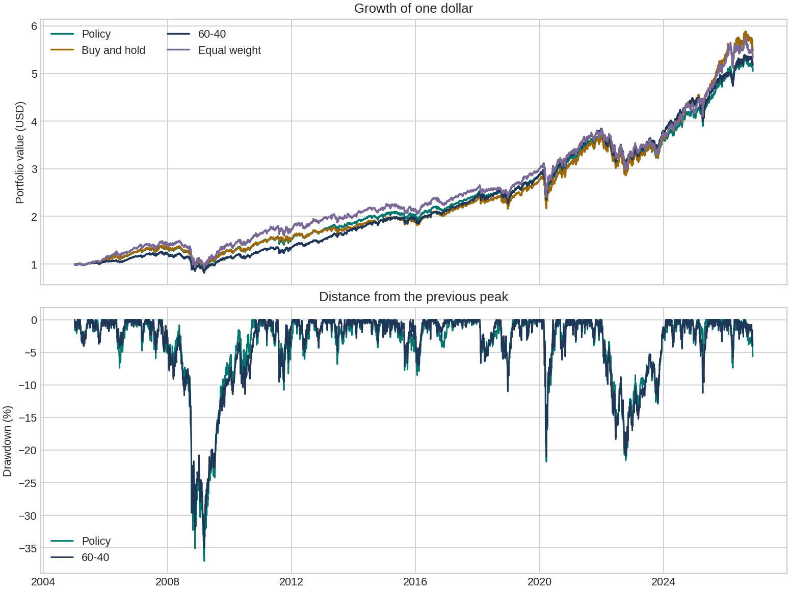
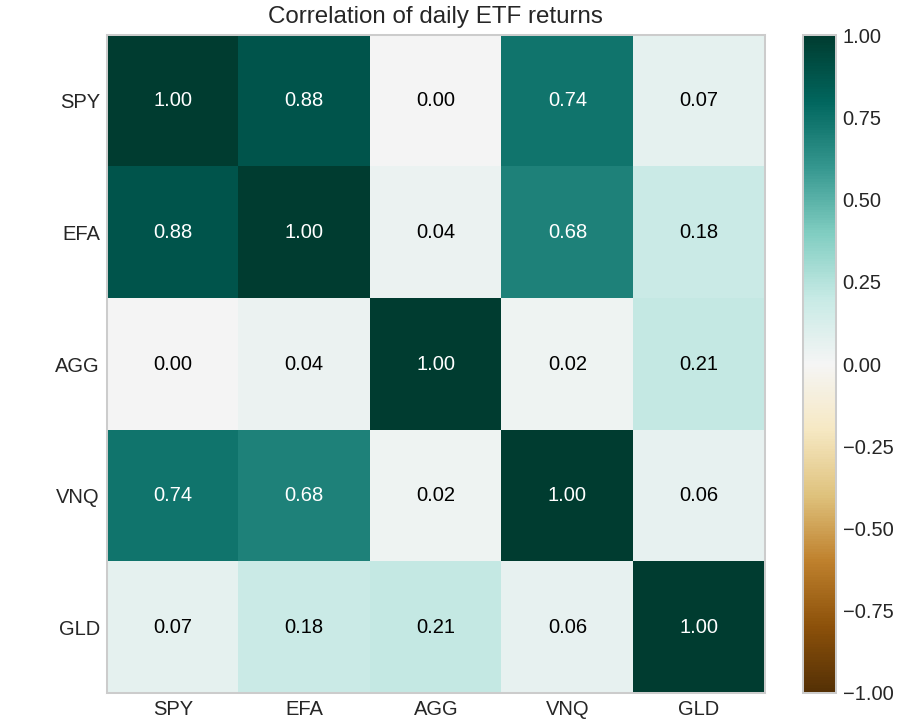

2005-01-03 to 2026-11-18 · 5,504 daily return observations · USD
Backtested four ETF allocation strategies in Python across 5,504 daily returns. The five-ETF policy recorded a 2.04-point deeper maximum drawdown and 0.12-point lower annualized growth than a quarterly rebalanced 60/40 benchmark.
For each initial dollar, the policy allocated 35 cents to SPY, 15 to EFA, 30 to AGG, 10 to VNQ and 10 to GLD. The benchmark invested 60 cents in SPY and 40 in AGG. This comparison measures the combined effect of the allocation changes.
| CAGR | Volatility | Sharpe | Max drawdown | Calmar | Ending wealth per dollar | Cumulative gross turnover | |
|---|---|---|---|---|---|---|---|
| Policy | 7.69% | 11.85% | 0.52 | -37.03% | 0.21 | 5.06 | 3.29 |
| Buy and hold | 8.08% | 12.20% | 0.54 | -34.74% | 0.23 | 5.47 | 0.00 |
| 60-40 | 7.81% | 11.26% | 0.55 | -34.99% | 0.22 | 5.18 | 2.65 |
| Equal weight | 7.95% | 13.02% | 0.50 | -38.63% | 0.21 | 5.33 | 3.71 |

With the same initial holdings, the quarterly policy earned 7.69% annualized versus 8.08% for buy and hold. Maximum drawdown was -37.03% versus -34.74%. Buy and hold allowed weights to drift. Quarterly trades restored the original exposures and incurred transaction costs.
Each row uses the benchmark's worst peak-to-trough interval within the named calendar year, including the previous year-end as the starting value. The final column measures daily SPY–AGG correlation across that year's available sessions.
| Year | Benchmark peak | Benchmark trough | Policy return | Benchmark return | Stock-bond correlation |
|---|---|---|---|---|---|
| 2008 | 2008-05-19 | 2008-11-20 | -34.58% | -30.53% | 0.03 |
| 2020 | 2020-02-19 | 2020-03-23 | -21.69% | -21.00% | 0.14 |
| 2022 | 2022-01-03 | 2022-10-14 | -21.42% | -20.57% | 0.32 |
Each entry is a contribution to the policy return minus the benchmark return over the same peak-to-trough dates. Contributions use actual holdings through each trade. Each column sums to that period’s performance gap, subject to rounding.
| Year | 2008 | 2020 | 2022 |
|---|---|---|---|
| Exposure | |||
| BONDS | +0.22 pp | +0.13 pp | +1.44 pp |
| GOLD | -1.63 pp | -0.37 pp | -0.71 pp |
| INTL_EQ | -8.95 pp | -4.69 pp | -4.29 pp |
| REAL_EST | -6.14 pp | -4.24 pp | -3.34 pp |
| Trading costs | -0.00 pp | +0.00 pp | -0.00 pp |
| US_EQ | +12.44 pp | +8.49 pp | +6.05 pp |

Listed real estate also carries equity risk. These proxies and weights were selected retrospectively. One historical path cannot establish which allocation will offer better protection in the next decline. The Sharpe calculation assumes a constant 2% annual risk-free rate. Taxes, initial funding costs and final liquidation are excluded.